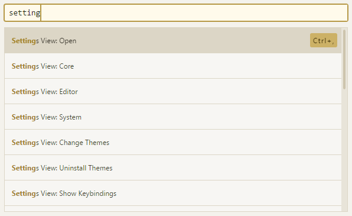
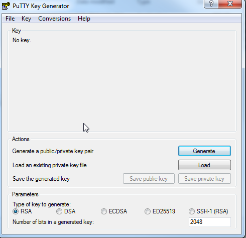

自定义Git
Tue 26 December 2017
之前在摆弄Pelican发布的时候发现git还有一个叫钩子的东东，处于好奇，想系统的看看自定义git的这一部分。 Pre git这书是学习git强烈推荐的，这里的内容主要来自它的第八章自定义git。
Git 配置
文章开头首先澄清了git的几个配置文件以及其优先级
| 配置文件等级 | 系统级 | 用户级 | 项目级 |
|---|---|---|---|
| git命令 | --system | --global | --local |
| windows路径 | $PROGRAMDATA/Git/config | $HOME/.config/git/config or ~/.gitconfig | $GIT_DIR/config |
| linux路径 | $(prefix)/etc/gitconfig | $HOME/.config/git/config or ~/.gitconfig | $GIT_DIR/config |
然后介绍了几个有用的配置项
core.editor
配置提交时候的默认编辑器
$ git config --global core.editor emacs //配置emacs为默认编辑器
$ git config --global core.editor "atom --wait" //atom官网提供的配置，配置atom为默认编辑器
commit.template
指定提交时候所有的格式模板文件
$ git config --global commit.template ~/.gitmessage.txt
$ git commit
提交时候就会自动完成文件中信息的占位
core.pager
该配置项指定 Git 运行诸如 log 和 diff 等命令所使用的分页器。命令输出超过一页时，自动在每页输出后暂停，可以按空格继续显示，按q退出
help.autocorrect
自动改正并运行命令，如果你把 help.autocorrect 设置成 1，那么只要有一个命令被模糊匹配到了，Git 会自动运行该命令。 help.autocorrect 接受一个代表十分之一秒的整数。 所以如果你把它设置为 50, Git 将在自动执行命令前给你 5 秒的时间改变主意。
merge.tool
可用常用的图形化的diff及merge工具来替代默认的diff及merge工具。
core.autocrlf
$ git config --global core.autocrlf true //提交时自动地把回车和换行转换成换行，而在检出代码时把换行转换成回车和换行（适合windows用户）
$ git config --global core.autocrlf input //提交时把回车和换行转换成换行，检出时不转换（适合Linux用户）
$ git config --global core.autocrlf false //都不转换（适合只在windows工作的用户）
Git 属性
主要讲根目录下.gitattributes文件的设置，这一章兴趣点不大，等以后需要用到了再细看。 不过还是有两点可以关注的，docx2txt对word文件进行版本管理，利用exiftool 对图像进行版本管理。
Git 钩子
终于来到钩子了，这个才是我现在最关心的功能 在特定的重要动作发生时触发自定义脚本。 有两组这样的钩子：客户端的和服务器端的。 客户端钩子由诸如提交和合并这样的操作所调用，而服务器端钩子作用于诸如接收被推送的提交这样的联网操作。
把一个正确命名且可执行的文件放入 Git 目录下的 hooks 子目录中（.git/hooks默认有一些钩子的例子 ），即可激活该钩子脚本。 钩子的触发完全是根据钩子的文件名来，所以钩子的文件名一定要正确，主要有如下列表：
| 文件名 | 运行条件 | 应用场景 |
|---|---|---|
| pre-commit | 钩子在键入提交信息前运行 | 用于检查即将提交的快照 |
| prepare-commit-msg | 启动提交信息编辑器之前，默认信息被创建之后运行 | 可以结合提交模板来使用它，动态地插入信息。 |
| commit-msg | 用户输入提交信息之后运行，提交动作执行之前 | 在提交通过前验证项目状态或提交信息。 |
| post-commit | 钩子在整个提交过程完成后运行 | 其可以改变 git commit 命令的输出，因此主要被用作通知提醒。 |
| pre-rebase | 运行于变基之前，以非零值退出可以中止变基的过程 | 禁止对已经推送的提交变基 |
| post-rewrite | 被那些会替换提交记录的命令调用（git commit --amend 和 git rebase等） | |
| post-checkout | git checkout 成功运行后 | 项目环境用它调整你的工作目录 |
| post-merge | git merge 成功运行后 | 恢复 Git 无法跟踪的工作区数据 |
| pre-push | git push 运行期间， 更新了远程引用但尚未传送对象时被调用 | 在推送开始之前，用它验证对引用的更新操作 |
| pre-receive | 服务器处理来自客户端的推送操作时 | 阻止对引用进行非快进（non-fast-forward）的更新，或者对该推送所修改的所有引用和文件进行访问控制 |
| update | 为每一个准备更新的分支各运行一次 | 如推送者同时向多个分支推送内容，pre-receive 只运行一次，相比之下 update 则会为每一个被推送的分支各运行一次。 |
| post-receive | 在整个过程完结以后运行 | 用来更新其他系统服务或者通知用户 |
钩子支持很多种脚本语言，Python，Ruby等均支持
下面是一个Demo，在Pelicam提交的过程中自动发布博客，并且上传到github 文件：post-commit
1 2 3 | #!/bin/sh
pelican content -o output -s pelicanconf.py
ghp-import -b master output -p
|
有个坑啊，本来吧这个放在pre-push上面的，然后writer分支提交完后触发mater分支提交，mater分支提交完后又被自己触发，死循环了。。。 最终还是post-commit了。
By signsmile, Category: skills
Tags: Git / Hook /
Other articles
Atom飞行手册的飞行手册
Mon 25 December 2017
通读了一遍Atom飞行手册的第一章快速入门以及第二章使用Atom，做了简单笔记，方便以后查阅。
命令面板
Atom的操作方式是以命令为基础的，不管是菜单功能还是内置的一些快捷键本质上都是执行Atom命令。而命令面板可以直接去执行Atom具备的所有命令，包括但不限于菜单栏上的功能以及快捷键的功能。打开命令面板的方式为快捷键 cmd-shift-p，在命令面板上带搜索功能的框中可以输入键字即可搜索到相应命令，点击鼠标左键或者按下回车就可以执行命令。
如下图就是打开atom设置界面的命令:

当然也可以根据右侧的提示用快捷键Ctrl+,来打开
设置界面
既然已经打开了设置界面，那就简单说说设置界面中一些有意思的
Core Settings
核心设置，保持默认就行
- Allow pending Pane Items //这个功能很有意思，它能让你在单击一个文件的时候不完全打开它，只是生成一个预览界面，会自动被后面打开的文件给替换。但是如果双击打开或者在预览界面编辑它，它就会在tab上面常驻，需要手动关闭。这在手工查找文件内容的时候很实用
- Auto Hide Menu Bar //自动隐藏菜单栏，屏幕小的话可以选上，按下alt键就会出来了
- File Encoding //Atom的默认编码方式是utf8, 很奇怪这个设置是放在这里而不是Core Settings里面
Edit …
By signsmile, Category: skills
Continue reading …Atom的Markdown Writer插件
Tue 19 December 2017
markdown-writer插件用于帮助快速编写Markdown文件 tool-bar-markdown-writer插件用于将markdown-writer的功能集成到工具条上
Atom内置
Atom已经内置了很多Snippet用来快速编写Markdown文件, 比如
- 输入img再敲入tab键就会快速输入
- 输入table再敲入tab键就会得到一个表格模板
- 输入b再敲入tab键就会快速输入加粗标记****
- 输入i再敲入tab键就会快速输入斜体标记**
- 输入code再敲入tab键就会快速输入代码块
- ......
markdown-writer
但是毕竟这些功能有限, 比如在导入图片的时候还是需要进行很多手工的操作，所以这时候就需要用到markdown-writer了。
markdown-writer的主要有以下这些便捷方式能够方便流畅的写文章:
快捷键
"shift-ctrl-I": "markdown-writer:insert-image" //插入图片
"shift-ctrl-k": "markdown-writer:insert-link" //插入链接
"ctrl-i …By signsmile, Category: skills
Continue reading …Pelican配置
Mon 11 December 2017
详细的配置项参考官方文档Pelican配置
这里贴下我自己的配置, 目前所做改动不多，主要是生成文章时候的一些配置，后续随着个性化配置增多，这个文章也会随时更新。
另外，我特别喜欢waterspill-en这个主题，把它放到了工程目录下的themes上了。
pelicanconf.py
基础配置文件
1 2 3 4 5 6 7 8 9 10 11 12 13 14 15 16 17 18 19 20 21 22 23 24 25 26 27 28 29 30 31 32 33 34 35 36 37 … |
By signsmile, Category: skills
Continue reading …Pelican自动发布到github
Sat 09 December 2017
今天说下用Pelican写作过程中的自动发布流程，主要用到了Fabric 以及ghp-import这两个工具
简介
Fabric 是一个命令行工具，能够简化SSH的使用，主要用于应用的部署和系统管理任务。它能通过fab命令执行fabfile.py文件中自行定制的任务函数，任务函数中可以使用run函数通过SSH执行远端主机命令，local函数用于执行本地命令。
ghp-import 是专门用来将你的静态网站导入到github pages的工具。由于静态网站需要部署在github和根目录下，这样会导致Pelican工程文件和生成的静态网站文件没法在同一个github仓库中维护。而ghp-import能方便的建立并维护一个独立的分支（master或者gh-pages）专门用来维护静态网站（output目录），而用户可以手动的在另外的分支维护Pelican工程文件。
安装
Fabric
$ pip install fabric
ghp-import
- linux下
pip install ghp-import - Windows下
pip install https://github.com/chevah/ghp-import/archive/win-support.zip
配置
pelican-quickstart过程会自动在工程的根目录下生成一个fabfile.py …
By signsmile, Category: skills
Continue reading …Pelican写作姿势
Wed 06 December 2017
熟悉你的工具，才能用好它， 所以接下来几天我都会深入研究一下Pelican这个工具在实际场合上的应用。 因为我这边是用Markdown进行写作的，下面涉及的内容都是关于Markdown的。 详细的内容可以参考官方手册Writing content， 这里仅对我所感兴趣的部分进行罗列
文章和页面
首先，所有产生的文档都放在content下面，用于生成相应的静态页面。
文档分两种，Articles和Pages。Pages与Articles的唯一区别就是Pages放在content/pages目录下面，
而其他任何地方放的文档都是Articles。一般Articles用来写文章、博客等，而Pages用来写不经常变动的比如个人简介、联系方式等。
DISPLAY_PAGES_ON_MENU用来配置是否将Pages显示为导航菜单，而status: hidden进行单个Page设置
文件元数据
Markdown的文档信息格式如下
Title: My super title //标题，唯一一个必须的，其他都可选
Date: 2010-12-03 10:20 //创建时间，如未指定且DEFAULT_DATE被设置为fs，文件的“mtime”时间戳将会被使用
Modified: 2010-12 …By signsmile, Category: skills
Continue reading …在github pages上搭建博客
Tue 05 December 2017
在上传Pelican生成的静态网站的时候发现绑定的域名没法访问， 上网一搜是因为缺少CNAME文件的配置，于是决定罗列下github上搭建博客的步骤，以备查询
-
首先得有个github账号，账号申请就不说了，github传送门
-
注册账号后新建一个仓库(repository)
这里需要特别留意的是仓库的名字必须以{username}.github.io命名，{username}用自己github的账户名替换

-
github上的仓库创建好以后同时也需要在本地创建个仓库以便维护，github会提供操作方法，命令行上照做即可。
echo "# signsmile.github.io" >> README.md git init git add README.md git commit -m "first commit" git remote add origin > https://github.com/signsmile/signsmile.github.io.git git …
By signsmile, Category: skills
Continue reading …利用Putty生成SSH公钥私钥
Mon 04 December 2017
装完git，居然没有ssh-keygen命令。无奈只好求助于putty，下载putty整个免安装的压缩包，里面有个PUTTYGEN.EXE工具可用于生成SSH的公钥和私钥

-
打开以后点击Generate
 -
鼠标在空白区域内划啊划，直到进度条满了（puttygen会采集鼠标划过的位置生成随机数）

-
ssh公钥私钥已经生成，可使用Save public key 和 Save private key按钮保存ppk格式的公钥和私钥文件

-
如果要产生OpenSSH格式的私钥，只需点击Conversions菜单下面的Export OpenSSH key即可。而对应OpenSSH格式的公钥在窗口界面直接复制即可

-
将公钥上传到github文章，将ssh文件重命名为id_rsa的私钥放到C:\Users\username.ssh目录下即可
Tip:windows下直接创建以.开头的文件或者目录会报错，在后面再跟一个.就可以了。比如 .ssh.
By signsmile, Category: skills
Continue reading …Pelican入门
Sun 03 December 2017
在github搭建博客，刚开始用Jekyll，然后发现里面的Markdown排版很奇葩，网上说要换Markdown解析器，不想折腾（有时候懒是一种美德）。继而研究Hexo，环境还没装好呢，让我看到了Pelican......
我这不刚好有python环境吗？于是乎......
首先你要有python环境，然后就很简单了...
安装Pelican以及Markdown库
pip install pelican markdown
创建你的博客工程目录，当然如果是windows系统的话直接手工创建也行
mkdir -p ~/projects/yoursite
cd ~/projects/yoursite
关键语句pelican-quickstart，用来创建母版工程。这时候你需要回答一些问题，根据实际情况填上即可。
C:\Users\xxx\Blog_Pelican>pelican-quickstart
Welcome to pelican-quickstart v3.7.1.
This script will help you …By signsmile, Category: skills
Continue reading …Markdown语法速查
Sat 02 December 2017
word没法git管理，txt没法排版，Markdown正合适
这里整理了一份Markdown语法速查，作为手边工具
区块元素
段落和换行
段落
第一行
中间有空行
第二行
第一行
第二行
换行
空格+空格+回车
第一行
第二行
标题
Markdown 支持两种标题的语法
类Setext
最高阶标题
=
第二阶标题
-
最高阶标题
第二阶标题
类atx形式
# H1
## H2
### H3
#### H4
##### H5
###### H6
H1
H2
H3
H4
H5
H6
区块
用 >，可嵌套
> 一级区块
>> 二级区块
>>> 三级区块
>
> *区块内可以直接加其他语法*
一级区块
二级区块
三级区块 …